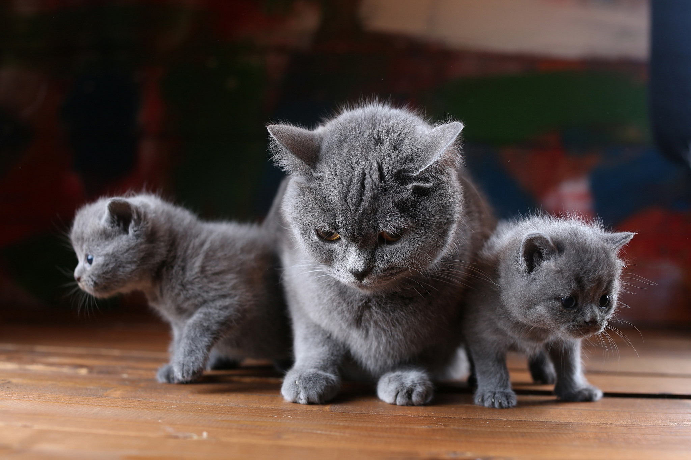

Мейн кун
Аборигенная порода американских кошек, характеризующаяся крупными размерами и внушительной массой тела. Представители породы – это надежные друзья и компаньоны, способные быстро завоевать любовь всей семьи.

Британскиая кошка
Станет прекрасным компаньоном для людей разного возраста и семей с детьми благодаря спокойному жизнерадостному характеру и философскому отношению к ежедневным отлучкам хозяев.
Русско голубая кошка
Зеленоглазая аристократка, обязанная своей популярностью уникальному серебристо-голубому окрасу и врожденной утонченности. Любопытная интеллектуалка и неутомимая охотница.